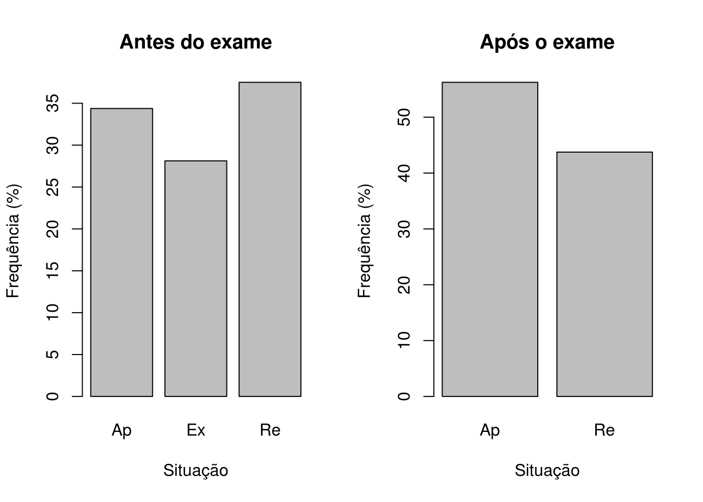

Experimentos fatoriais \(2^k\), \(k > 3\)
Introdução
A medida que o número de fatores cresce em um experimento fatorial, o número de efeitos que podem ser estimados também cresce. Com isso, fazer o experimento com replicação acaba sendo praticamente inviável. Por exemplo:
- \(2^4\) possui 4 efeitos principais, 6 interações de segunda ordem, 4 interações de terceira ordem, e 1 interação de quarta ordem
- \(2^6\) possui 6 efeitos principais, 15 interações de segunda ordem, 20 interações de terceira ordem, 15 interações de quarta ordem, 6 interações de quinta ordem, e 1 interação de sexta ordem
Geralmente existem mais fatores a serem estudados do que pode ser convenientemente acomodado dentro do tempo e orçamento disponível. No entanto, veremos que geralmente é possível separar efeitos significativos de erros ao acaso sem a necessidade de replicação. Dessa forma, no exemplo analisado anteriormente, ao invés de utilizarmos 16 corridas para produzir um fatorial \(2^3\) replicado, poderíamos ter introduzido um quarto fator e realizar um experimento \(2^4\) sem réplicas.
Em muitas situações, o princípio da esparsidade dos efeitos se aplica, ou seja, o sistema geralmente é dominado pelos efeitos principais e pelas interações de ordens baixas. As interações de terceira ordem ou superiores geralmente são negligenciadas.
Como consequência, quando o número de fatores for moderadamente grande, como \(k = 4\) ou, em geral, \(k \geq 5\), uma prática comum é correr somente uma réplica do planejamento, e então combinar as interações de ordem alta como uma estimativa do erro. No entanto, se eventualmente alguma interação de ordem alta for significativa, então esse procedimento não é adequado.
Um método simples para verificar o tamanho dos efeitos de um fator foi proposta por Daniel (1959), que consiste em construir um gráfico das estimativas dos efeitos em uma escala de probabilidade normal. Por construção, a distribuição dos efeitos estimados possui média zero e variância \(\sigma^2\). Portanto, os efeitos que forem desprezíveis estarão em cima de uma linha reta nesse gráfico, enquanto que efeitos significativos não terão média zero e estarão mais afastados dessa linha.
Exemplo de um experimento \(2^4\)
Representação geométrica
Para um experimento \(2^4\), a representação geométrica fica:
D [-] | D [+]
|
bc ------- abc | bcd ------- abcd
.| .| | .| .|
[+] c__|______ac | | [+] cd__|_____acd |
| | | | | | | | |
C | b -----|- ab [+] | C | bd -----|- abd [+]
| . | . B | | . | . B
[-] (1)________a [-] | [-] d _______ ad [-]
[-] A [+] | [-] A [+]O que gera a seguinte tabela de sinais, seguindo a ordem de Yates:
nom A B C D
1 (1) - - - -
2 a + - - -
3 b - + - -
4 ab + + - -
5 c - - + -
6 ac + - + -
7 bc - + + -
8 abc + + + -
9 d - - - +
10 ad + - - +
11 bd - + - +
12 abd + + - +
13 cd - - + +
14 acd + - + +
15 bcd - + + +
16 abcd + + + +No capítulo 5 de Box, Hunter e Hunter (2005) é apresentado um experimento que avalia a taxa de conversão de um processo, conforme a combinação de 4 fatores: carga de catalisador (x1), temperatura (x2), pressão (x3), e concentração de um reagente (x4). O experimento foi realizado sem repetições, e pode ser visualizado abaixo (disponível aqui):
url <- "http://leg.ufpr.br/~fernandomayer/data/BHH2/tab0510a.dat"
dados <- read.table(url, header = TRUE)
str(dados)
# 'data.frame': 16 obs. of 7 variables:
# $ yatesOrd : int 1 2 3 4 5 6 7 8 9 10 ...
# $ x1 : int -1 1 -1 1 -1 1 -1 1 -1 1 ...
# $ x2 : int -1 -1 1 1 -1 -1 1 1 -1 -1 ...
# $ x3 : int -1 -1 -1 -1 1 1 1 1 -1 -1 ...
# $ x4 : int -1 -1 -1 -1 -1 -1 -1 -1 1 1 ...
# $ conversion: int 70 60 89 81 69 62 88 81 60 49 ...
# $ randomOrd : int 8 2 10 4 15 9 1 13 16 5 ...
kable(dados)| yatesOrd | x1 | x2 | x3 | x4 | conversion | randomOrd |
|---|---|---|---|---|---|---|
| 1 | -1 | -1 | -1 | -1 | 70 | 8 |
| 2 | 1 | -1 | -1 | -1 | 60 | 2 |
| 3 | -1 | 1 | -1 | -1 | 89 | 10 |
| 4 | 1 | 1 | -1 | -1 | 81 | 4 |
| 5 | -1 | -1 | 1 | -1 | 69 | 15 |
| 6 | 1 | -1 | 1 | -1 | 62 | 9 |
| 7 | -1 | 1 | 1 | -1 | 88 | 1 |
| 8 | 1 | 1 | 1 | -1 | 81 | 13 |
| 9 | -1 | -1 | -1 | 1 | 60 | 16 |
| 10 | 1 | -1 | -1 | 1 | 49 | 5 |
| 11 | -1 | 1 | -1 | 1 | 88 | 11 |
| 12 | 1 | 1 | -1 | 1 | 82 | 14 |
| 13 | -1 | -1 | 1 | 1 | 60 | 3 |
| 14 | 1 | -1 | 1 | 1 | 52 | 12 |
| 15 | -1 | 1 | 1 | 1 | 86 | 6 |
| 16 | 1 | 1 | 1 | 1 | 79 | 7 |
Como referência, os níveis -1 (baixo) e 1 (alto) de cada fator são os seguintes:
| (-) | (+) | |
|---|---|---|
Carga de catalisador (x1) |
10 | 15 |
Temperatura (x2) |
220 | 240 |
Pressão (x3) |
50 | 80 |
Concentração (x4) |
10 | 12 |
A representação geométrica desse experimento é então:
E as definições básicas são:
## Número de fatores
k <- 4
## Número de níveis
a <- b <- c <- d <- 2
## Número de repetições
r <- 1Análise exploratória
Uma possível forma de visualizar se existe interação nesse experimento é através do sguinte gráfico:
library(lattice)
## Interação de x2 com x3, para cada nível de x4, fixando x1
xyplot(conversion ~ factor(x1) | x2 + x3, groups = x4,
data = dados, type = c("p", "a"), auto.key = TRUE)## Interação de x2 com x4, para cada nível de x3, fixando x1
xyplot(conversion ~ factor(x1) | x2 + x4, groups = x3,
data = dados, type = c("p", "a"), auto.key = TRUE)Note que várias outras combinações são possíveis, assim como outras formas de visualização. No entanto note que à medida que o número de fatores (\(k\)) aumentar, este tipo de visualização ficará cada vez mais difícil de ser interpretada.
Contrastes, efeitos e avaliação do modelo
Como vimos anteriormente, podemos calcular os efeitos diretamente através da tabela de contrastes. Agora, ao invés de calcularmos essa tabela manualmente, podemos fazer uso da função model.matrix() do R. Como as colunas dos fatores já estão codificadas no padrão -1 e 1, a chamada dessa função produzirá a tabela de contrastes completa.
## Declara o modelo completo com todas as interações possíveis
(tab <- model.matrix(~ x1 * x2 * x3 * x4, data = dados))
# (Intercept) x1 x2 x3 x4 x1:x2 x1:x3 x2:x3 x1:x4 x2:x4 x3:x4 x1:x2:x3
# 1 1 -1 -1 -1 -1 1 1 1 1 1 1 -1
# 2 1 1 -1 -1 -1 -1 -1 1 -1 1 1 1
# 3 1 -1 1 -1 -1 -1 1 -1 1 -1 1 1
# 4 1 1 1 -1 -1 1 -1 -1 -1 -1 1 -1
# 5 1 -1 -1 1 -1 1 -1 -1 1 1 -1 1
# 6 1 1 -1 1 -1 -1 1 -1 -1 1 -1 -1
# 7 1 -1 1 1 -1 -1 -1 1 1 -1 -1 -1
# 8 1 1 1 1 -1 1 1 1 -1 -1 -1 1
# 9 1 -1 -1 -1 1 1 1 1 -1 -1 -1 -1
# 10 1 1 -1 -1 1 -1 -1 1 1 -1 -1 1
# 11 1 -1 1 -1 1 -1 1 -1 -1 1 -1 1
# 12 1 1 1 -1 1 1 -1 -1 1 1 -1 -1
# 13 1 -1 -1 1 1 1 -1 -1 -1 -1 1 1
# 14 1 1 -1 1 1 -1 1 -1 1 -1 1 -1
# 15 1 -1 1 1 1 -1 -1 1 -1 1 1 -1
# 16 1 1 1 1 1 1 1 1 1 1 1 1
# x1:x2:x4 x1:x3:x4 x2:x3:x4 x1:x2:x3:x4
# 1 -1 -1 -1 1
# 2 1 1 -1 -1
# 3 1 -1 1 -1
# 4 -1 1 1 1
# 5 -1 1 1 -1
# 6 1 -1 1 1
# 7 1 1 -1 1
# 8 -1 -1 -1 -1
# 9 1 1 1 -1
# 10 -1 -1 1 1
# 11 -1 1 -1 1
# 12 1 -1 -1 -1
# 13 1 -1 -1 1
# 14 -1 1 -1 -1
# 15 -1 -1 1 -1
# 16 1 1 1 1
# attr(,"assign")
# [1] 0 1 2 3 4 5 6 7 8 9 10 11 12 13 14 15A partir dessa tabela podemos então calcular os contrastes e os efeitos:
## Calcula os contrastes
(contr <- t(tab[, -1]) %*% dados$conversion)
# [,1]
# x1 -64
# x2 192
# x3 -2
# x4 -44
# x1:x2 8
# x1:x3 6
# x2:x3 -10
# x1:x4 0
# x2:x4 36
# x3:x4 -2
# x1:x2:x3 -6
# x1:x2:x4 4
# x1:x3:x4 -2
# x2:x3:x4 -6
# x1:x2:x3:x4 -2
## Calcula os efeitos
(ef <- contr/(r * 2^(k-1)))
# [,1]
# x1 -8.00
# x2 24.00
# x3 -0.25
# x4 -5.50
# x1:x2 1.00
# x1:x3 0.75
# x2:x3 -1.25
# x1:x4 0.00
# x2:x4 4.50
# x3:x4 -0.25
# x1:x2:x3 -0.75
# x1:x2:x4 0.50
# x1:x3:x4 -0.25
# x2:x3:x4 -0.75
# x1:x2:x3:x4 -0.25Para testar quais efeitos são significativos, poderíamos pensar inicialmente em fazer uma ANOVA. No entanto, este experimento não possui repetição, e temos um parâmetro para cada observação, fazendo com que o modelo seja saturado. Dessa forma, não temos como avaliar a significância dos efeitos. Veja o resultado da ANOVA para o modelo completo:
anova(lm(conversion ~ (x1 * x2 * x3 * x4), data = dados))
# Warning in anova.lm(lm(conversion ~ (x1 * x2 * x3 * x4), data = dados)):
# ANOVA F-tests on an essentially perfect fit are unreliable
# Analysis of Variance Table
#
# Response: conversion
# Df Sum Sq Mean Sq F value Pr(>F)
# x1 1 256.00 256.00
# x2 1 2304.00 2304.00
# x3 1 0.25 0.25
# x4 1 121.00 121.00
# x1:x2 1 4.00 4.00
# x1:x3 1 2.25 2.25
# x2:x3 1 6.25 6.25
# x1:x4 1 0.00 0.00
# x2:x4 1 81.00 81.00
# x3:x4 1 0.25 0.25
# x1:x2:x3 1 2.25 2.25
# x1:x2:x4 1 1.00 1.00
# x1:x3:x4 1 0.25 0.25
# x2:x3:x4 1 2.25 2.25
# x1:x2:x3:x4 1 0.25 0.25
# Residuals 0 0.00Uma forma de verificar quais efeitos são importantes é através de um gráfico de probabilidade normal para a estimativa dos efeitos. Lembre-se que, sob a hipótses nula, todos os parâmetros do modelo são iguais a zero, e pela definição do termo de erro do modelo, se os parâmetros são iguais a zero, então sobra apenas o erro que possui média 0 e variância constante \(\sigma^2\). Dessa forma, se a hipótese nula for verdadeira, esperamos que os efeitos tenham também média 0, e fiquem em cima da linha em um gráfico de probabilidade normal. Os efeitos que se afastarem muito da linha são aqueles que possuem média diferente de zero, e portanto, são aqueles que temos interesse.
## Gráfico de probabilidade normal dos efeitos estimados
qqaux <- qqnorm(ef, col = 2, pch = 19); qqline(ef)
text(qqaux$x, qqaux$y, rownames(qqaux$y), cex = 0.8, pos = 3)Através do gráfico acima, vemos que os efeitos mais discrepantes são os de x1, x2, x4, e da interação x2:x4. De maneira geral, termos de ordem maior que 2 ficaram no centro, o que mostra que interações de ordem grande podem ser consideradas como nulas. Portanto, para sermos conservadores, podemos ajustar agora um modelo considerando apenas as interações de segunda ordem.
m0 <- lm(conversion ~ (x1 + x2 + x3 + x4)^2, data = dados)
anova(m0)
# Analysis of Variance Table
#
# Response: conversion
# Df Sum Sq Mean Sq F value Pr(>F)
# x1 1 256.00 256.00 213.3333 2.717e-05 ***
# x2 1 2304.00 2304.00 1920.0000 1.169e-07 ***
# x3 1 0.25 0.25 0.2083 0.6672191
# x4 1 121.00 121.00 100.8333 0.0001676 ***
# x1:x2 1 4.00 4.00 3.3333 0.1274640
# x1:x3 1 2.25 2.25 1.8750 0.2292050
# x1:x4 1 0.00 0.00 0.0000 1.0000000
# x2:x3 1 6.25 6.25 5.2083 0.0713436 .
# x2:x4 1 81.00 81.00 67.5000 0.0004350 ***
# x3:x4 1 0.25 0.25 0.2083 0.6672191
# Residuals 5 6.00 1.20
# ---
# Signif. codes: 0 '***' 0.001 '**' 0.01 '*' 0.05 '.' 0.1 ' ' 1Note que a variabilidade das interações não consideradas foi encorporada na soma de quadrado dos resíduos, e assim podemos agora ter uma estimativa para \(\sigma^2\).
Com esse resultado, confirmamos a hipótese levantada no gráfico de probabilidades normais de que apenas 3 fatores principais e uma interação são importantes. A interação x2:x3 apareceu também como marginalmente significativa. Por isso, podemos agora atualizar o modelo com apenas esses termos. Na dúvida, podemos manter a interação x2:x3 para avaliação, e por consequência devemos manter também x3 pelo princípio da marginalidade.
m1 <- update(m0, . ~ x1 + x2 + x3 + x4 + x2:x3 + x2:x4, data = dados)
anova(m1)
# Analysis of Variance Table
#
# Response: conversion
# Df Sum Sq Mean Sq F value Pr(>F)
# x1 1 256.00 256.00 184.32 2.673e-07 ***
# x2 1 2304.00 2304.00 1658.88 1.615e-11 ***
# x3 1 0.25 0.25 0.18 0.6813
# x4 1 121.00 121.00 87.12 6.332e-06 ***
# x2:x3 1 6.25 6.25 4.50 0.0629 .
# x2:x4 1 81.00 81.00 58.32 3.202e-05 ***
# Residuals 9 12.50 1.39
# ---
# Signif. codes: 0 '***' 0.001 '**' 0.01 '*' 0.05 '.' 0.1 ' ' 1Já vimos que os valores F e por consequência os p-valores se alteram, pois a soma de quadrados dos resíduos e os graus de liberdade residual mudam de um modelo para outro. No entanto, as somas de quadrados dos fatores não se alteram devido à ortogonalidade.
Assim, vemos que interação x2:x3 é significativa, mas podemos avaliar de sua presença é importante através do teste de razão de verossimilhança entre esse modelo sob avaliação e outro modelo desconsiderando esse termo e o x3 (já que ele não é significativo):
## Atualiza o modelo, retirando a interação x2:x3 e x3
m2 <- update(m1, . ~ x1 + x2*x4)
## Teste de razão de verossimilhança entre os dois modelos
anova(m1, m2)
# Analysis of Variance Table
#
# Model 1: conversion ~ x1 + x2 + x3 + x4 + x2:x3 + x2:x4
# Model 2: conversion ~ x1 + x2 + x4 + x2:x4
# Res.Df RSS Df Sum of Sq F Pr(>F)
# 1 9 12.5
# 2 11 19.0 -2 -6.5 2.34 0.152Com esse resultado, não rejeitamos a hipótese nula de que os dois modelos são iguais, e assim, optamos por aquele com menor número de parâmetros pelo princípio da parcimônia.
Sendo assim, o modelo final que devemos adotar é aquele que inclui apenas x1, x2, x4, e a interação x2:x4. A tabela de ANOVA final é portanto:
anova(m2)
# Analysis of Variance Table
#
# Response: conversion
# Df Sum Sq Mean Sq F value Pr(>F)
# x1 1 256 256.00 148.210 1.003e-07 ***
# x2 1 2304 2304.00 1333.895 7.812e-13 ***
# x4 1 121 121.00 70.053 4.240e-06 ***
# x2:x4 1 81 81.00 46.895 2.772e-05 ***
# Residuals 11 19 1.73
# ---
# Signif. codes: 0 '***' 0.001 '**' 0.01 '*' 0.05 '.' 0.1 ' ' 1Note que inicialmente esse experimento \(2^4\) não possui repetições, e portanto não tinhamos como calcular os erros para as estimativas. Ao analisar quais efeitos eram de fato importantes, eliminamos a maior parte das interações de alta ordem, fazendo com que tivessemos “repetições”, e dessa forma, conseguimos obter uma estimativa de erro (que aqui é uma estimativa da variância, dada pelo quadrado médio dos resíduos).
Os coeficientes dos efeitos podem então ser obtidos através do summary(), que também calcula o erro-padrão destas estimativas e faz o teste \(t\) para a hipótese nula de que os coeficientes são zero.
summary(m2)
#
# Call:
# lm(formula = conversion ~ x1 + x2 + x4 + x2:x4, data = dados)
#
# Residuals:
# Min 1Q Median 3Q Max
# -2.25 -0.75 0.25 0.75 2.25
#
# Coefficients:
# Estimate Std. Error t value Pr(>|t|)
# (Intercept) 72.2500 0.3286 219.896 < 2e-16 ***
# x1 -4.0000 0.3286 -12.174 1.00e-07 ***
# x2 12.0000 0.3286 36.523 7.81e-13 ***
# x4 -2.7500 0.3286 -8.370 4.24e-06 ***
# x2:x4 2.2500 0.3286 6.848 2.77e-05 ***
# ---
# Signif. codes: 0 '***' 0.001 '**' 0.01 '*' 0.05 '.' 0.1 ' ' 1
#
# Residual standard error: 1.314 on 11 degrees of freedom
# Multiple R-squared: 0.9932, Adjusted R-squared: 0.9907
# F-statistic: 399.8 on 4 and 11 DF, p-value: 7.951e-12Para efeito de interpretação, podemos multiplicar os coeficientes estimados por 2, e assim obtemos os efeitos (quando se passa do nível baixo para o alto de um fator). Portanto:
c(coef(m2)[1], 2*coef(m2)[-1])
# (Intercept) x1 x2 x4 x2:x4
# 72.25 -8.00 24.00 -5.50 4.50Como resultado, podemos dizer então:
- Quando aumenta-se a carga de catalisador de 10 para 15 (nível baixo para nível alto), ocorre uma diminuição de 8 unidades na conversão (variável resposta).
- Como existe interação entre temperatura (
x2) e concentração (x4), os efeitos destes fatores devem ser considerados conjuntamente. Se analisarmos a interação destes dois efeitos isoladamente (veja figura abaixo), notamos que a diminuição de conversão é maior quando se utiliza o nível baixo de temperatura, o que caracteriza a interação. Veja também que o efeito calculado de 4.5 é obtido através dos contrastes destes dois fatores, calculados como se fosse um experimento \(2^2\): [(65.25 + 83.75) - (55.25 + 84.75)]/4 = 4.5. - O fator pressão (
x3) é essencialmente inerte, ou sem significância (pelo menos para este experimento), uma vez que nem seu efeito principal, nem nenhuma interação com qualquer outro fator produz algum efeito na conversão. Na prática isso significa que o nível de pressão não interfere na resposta, e assim pode ser escolhido aquele nível que otimize alguma outra resposta, como por exemplo o custo ou o tempo de operação.
with(dados, interaction.plot(x4, x2, conversion))
meds <- with(dados, tapply(conversion, factor(x2):factor(x4), mean))
text(1, meds[1], labels = meds[1], pos = 3)
text(2, meds[2], labels = meds[2], pos = 3)
text(1, meds[3], labels = meds[3], pos = 1)
text(2, meds[4], labels = meds[4], pos = 1)Uma vez que o fator pressão (x3) não interfere no processo, podemos tentar olhar o que acontece com a interação dos fatores que permaneceram como influentes.
## Tentativa de visualização
xyplot(conversion ~ factor(x2) + factor(x4) | x1,
data = dados, type = c("p", "a"), auto.key = TRUE)
Com esses resultados, vemos então que o experimento incial \(2^4\), pode agora ser reduzido para um experimento fatorial \(2^3\), processo denominado de projeção de um experimento fatorial. A partir desse ponto, o experimentador possui duas opções:
- Fazer um novo experimento, agora com apenas estes três fatores e com um número maior de repetições: projeção
- Fazer um novo experimento com estes três fatores e, se desejado, outros fatores que não foram considerados no primeiro experimento. Nesse caso é preciso lembrar que as podem haver interações entre estes novos fatores e aqueles que foram descartados no primeiro experimento, e isto não está sendo considerado neste caso.
Análise dos resíduos
Para avaliar a suposição de normalidade podemos fazer um gráfico de quantis normais para os resíduos:
## Obtém os resíduos do modelo final
res <- residuals(m2)
## Gráfico de quantis normais
qqnorm(res); qqline(res)E para verificar a suposição de homegeneidade de variâncias podemos fazer um gráfico dos resíduos versus cada fator do modelo final:
par(mfrow = c(2, 2))
with(dados, {
plot(res ~ x1)
abline(h = 0, lty = 2, col = 2)
plot(res ~ x2)
abline(h = 0, lty = 2, col = 2)
plot(res ~ x4)
abline(h = 0, lty = 2, col = 2)
plot(res ~ interaction(x2, x4))
abline(h = 0, lty = 2, col = 2)
})
par(mfrow = c(1, 1))Predição
Como já vimos, as predições para experimentos fatoriais nada mais são do que as estimativas das médias para cada combinação dos fatores, incluindo a interação quando houver. Note que quando existe interação, o modelo não é mais aditivo, e portanto, as médias simples, calculadas apenas com fatores principais não serão estimativas corretas para o experimento. Portanto, as médias estimadas só levam em consideração a mudança nos níveis dos fatores importantes para o processo, independente dos níveis dos outros fatores.
## Predição para as combinações únicas dos fatores
pred <- data.frame(x1 = dados$x1,
x2 = dados$x2,
x4 = dados$x4)
pred$y <- predict(m2, newdata = pred)
pred
# x1 x2 x4 y
# 1 -1 -1 -1 69.25
# 2 1 -1 -1 61.25
# 3 -1 1 -1 88.75
# 4 1 1 -1 80.75
# 5 -1 -1 -1 69.25
# 6 1 -1 -1 61.25
# 7 -1 1 -1 88.75
# 8 1 1 -1 80.75
# 9 -1 -1 1 59.25
# 10 1 -1 1 51.25
# 11 -1 1 1 87.75
# 12 1 1 1 79.75
# 13 -1 -1 1 59.25
# 14 1 -1 1 51.25
# 15 -1 1 1 87.75
# 16 1 1 1 79.75Note que a projeção do experimento, conforme vimos usando a função proj() é exatamente a mesma coisa que a predição do modelo final para cada nível dos fatores:
## Projeção do experimento com proj()
proj(m2)
# (Intercept) x1 x2 x4 x2:x4 Residuals
# 1 72.25 4 -12 2.75 2.25 0.75
# 2 72.25 -4 -12 2.75 2.25 -1.25
# 3 72.25 4 12 2.75 -2.25 0.25
# 4 72.25 -4 12 2.75 -2.25 0.25
# 5 72.25 4 -12 2.75 2.25 -0.25
# 6 72.25 -4 -12 2.75 2.25 0.75
# 7 72.25 4 12 2.75 -2.25 -0.75
# 8 72.25 -4 12 2.75 -2.25 0.25
# 9 72.25 4 -12 -2.75 -2.25 0.75
# 10 72.25 -4 -12 -2.75 -2.25 -2.25
# 11 72.25 4 12 -2.75 2.25 0.25
# 12 72.25 -4 12 -2.75 2.25 2.25
# 13 72.25 4 -12 -2.75 -2.25 0.75
# 14 72.25 -4 -12 -2.75 -2.25 0.75
# 15 72.25 4 12 -2.75 2.25 -1.75
# 16 72.25 -4 12 -2.75 2.25 -0.75
# attr(,"df")
# (Intercept) x1 x2 x4 x2:x4 Residuals
# 1 1 1 1 1 11
# attr(,"formula")
# conversion ~ x1 + x2 + x4 + x2:x4
# attr(,"onedf")
# [1] FALSE
cbind(pred, yproj = apply(proj(m2)[,-6], 1, sum))
# x1 x2 x4 y yproj
# 1 -1 -1 -1 69.25 69.25
# 2 1 -1 -1 61.25 61.25
# 3 -1 1 -1 88.75 88.75
# 4 1 1 -1 80.75 80.75
# 5 -1 -1 -1 69.25 69.25
# 6 1 -1 -1 61.25 61.25
# 7 -1 1 -1 88.75 88.75
# 8 1 1 -1 80.75 80.75
# 9 -1 -1 1 59.25 59.25
# 10 1 -1 1 51.25 51.25
# 11 -1 1 1 87.75 87.75
# 12 1 1 1 79.75 79.75
# 13 -1 -1 1 59.25 59.25
# 14 1 -1 1 51.25 51.25
# 15 -1 1 1 87.75 87.75
# 16 1 1 1 79.75 79.75Como os fatores são quantitativos, podemos também fazer a predição para um grid de valores entre os níveis baixo e alto. Os gráficos gerados a partir destas predições são chamados de gráficos de superfície de resposta de primeira ordem.
## Predição para um intervalo de valores entre os níveis baixo e alto
## dos fatores
pred <- expand.grid(x1 = seq(-1, 1, length.out = 30),
x2 = seq(-1, 1 ,length.out = 30),
x4 = seq(-1, 1 ,length.out = 30))
pred$y <- predict(m2, newdata = pred)
## Vários formas de visualizar
wireframe(y ~ x2 + x4, data = pred, drape = TRUE)
levelplot(y ~ x2 + x4, data = pred, cuts = 90,
col.regions = heat.colors)
Análise de um experimento \(2^6\)
Ver script.
Exercícios
Exercícios de Box, Hunter e Hunter (2005), capitulo 5:
Adicione qualquer constante aos níveis altos (+1) da resposta de qualquer fator do exemplo inicial de fatorial \(2^4\) (dados aqui). Verifique que somente aquele único contraste será afetado. Da mesma forma, verifique que se uma constante for adicionada à todas as observações, somente a média geral será alterada.
Para os dados disponíveis aqui, calcule os efeitos principais, interações e erro-padrão.
Com os mesmos dados do exercício anterior, considere que cada repetição é na verdade um bloco. Dessa forma, o experimento passa a ser um fatorial \(2^3\) em blocos completos. Calcule novamente os efeitos e o erro-padrão e verifique as diferenças obtidas.
As respostas podem ser consultadas neste script.

Este conteúdo está disponível por meio da Licença Creative Commons 4.0